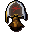

Your Colosseum runs
Your loot

Nothing claimed yet
Choose a cash-out wave and number of cleared runs to simulate accumulated rewards, including quivers, sunfire armour and the pet.
Completed runs0
Wave reached12
Echo crystal reward rolls0
Unique rewards
Collected loot
Dry calculator results
How lucky are your drops?
Enter your completed runs and rare drops to calculate odds across every cleared wave, including set-protected armour.